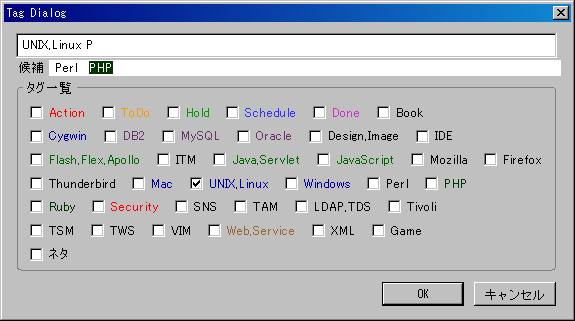
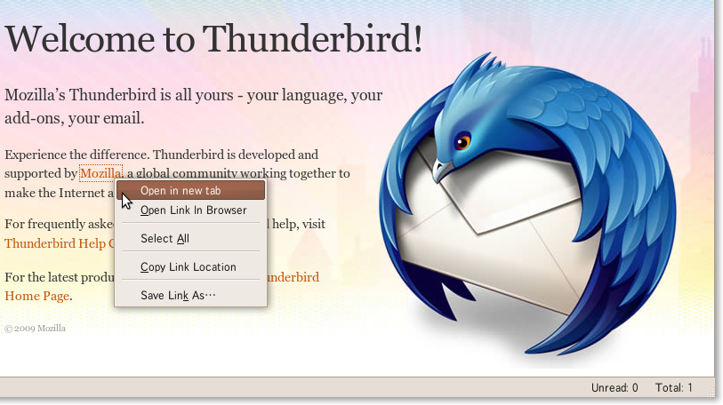

Jetpack Feature置き場
Yet another addon which forks from hatena/hatena-bookmark-xul and adds custom favorit tags menu like a DeliciousBookmark.

Easily add or create tags
Get Extension

Enables to open a given URL in a new tab
For Mozilla Prism
enable to make user scripts to work.
Firefox, XULRunner上で動く、シェルライクなJavaScript Console
ローカルのファイラーをめざす
 @github@github
@github@github